브라질 마켓플레이스 Olist 공개 데이터(2016~2018)를 Google Colab에서 분석·학습하고,
저장한 모델 4개를 불러와 예측하는 Streamlit 대시보드로 서빙했습니다.
| 01 프로젝트 개요 · 문제 정의 | 04~05 EDA 인사이트 10 | 08 판매자 유형 (K-Means) |
| 03 데이터 준비 · 병합 | 06 유사 상품 추천 | 09 판매자 이탈 예측 |
| 10 서빙 대시보드 (STEP2) | 07 리뷰 감성 분석 | 11 전략 제안 · 한계 |
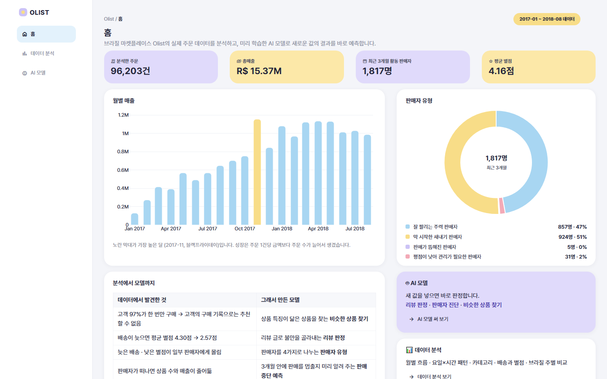
협업 필터링(“비슷한 고객이 산 상품”)과 고객 이탈 예측(“전부 이탈”만 찍어도 정확도 97%)은 배울 거리가 없습니다.
| 문제 | 방법 (비교 대상) | 핵심 결과 | 비즈니스 활용 |
|---|---|---|---|
| 유사 상품 추천 PART 6 | 카테고리 필터 + KNN vs 랜덤 · 가격 ±20% 규칙 | 기준 상품과의 특징 차이 72% → 45% → 30% | 상품 페이지 “비슷한 상품” |
| 리뷰 감성 분석 PART 7-1~7-3 | TF-IDF + 로지스틱 회귀 vs Embedding · Bi-LSTM · BERT | 정확도 0.917 (기준선 0.710), 부정 F1 0.869 → 가볍고 정확한 ML 모델 배포 | 부정 리뷰 자동 분류 → CS 우선 대응 |
| 판매자 유형 PART 8 | 로그 변환 + K-Means 엘보우 · 실루엣으로 k=4 | 핵심 우량 876 · 신규 성장 947 · 휴면 461 · 저평점 위험 218명 | 유형별 관리 정책 |
| 판매자 이탈 예측 PART 9 | 로지스틱 회귀 (balanced) vs 규칙 · 랜덤 포레스트 | 5-fold F1 0.58 (규칙 0.53), 5번 모두 규칙보다 높음 · test 재현율 0.75 | 이탈 확률 × 판매액 우선순위 |
📌 공통 원칙 : 단순한 방법과 먼저 비교하고, 나아질 때 복잡한 방법을 쓴다. (PART 10 정리)
상품 2개 × 결제 2건이면 같은 주문이 4행이 됩니다. 리뷰가 2개 이상인 주문도 547건 있습니다.
| 세는 것 | 집계 기준 | 주의 |
|---|---|---|
| 주문 수 · 리뷰 | orders (주문 1건 = 1행) | 통합 표는 상품·결제·리뷰 행이 곱해져 있음 |
| 상품 · 카테고리 | items (상품 1개 = 1행) | 결제 행 중복 제거 |
| 매출 | pay (주문별 결제 합) | 1:N 결제를 주문별로 먼저 합침 |
| 재구매 | customer_unique_id | customer_id는 주문마다 새로 발급 |
분석 기간 : 앞뒤 빈 구간을 뺀 2017-01-05 ~ 2018-08-29, 배송 완료 주문
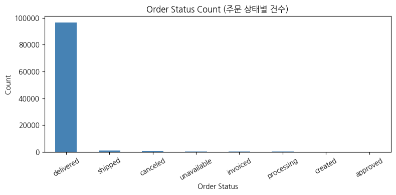
대부분이 delivered → 분석은 배송 완료 주문 기준
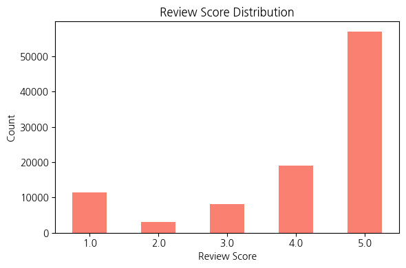
5점이 가장 많고 1점이 두 번째 → 감성 분석은 4·5점 긍정 / 1·2점 부정, 3점 제외
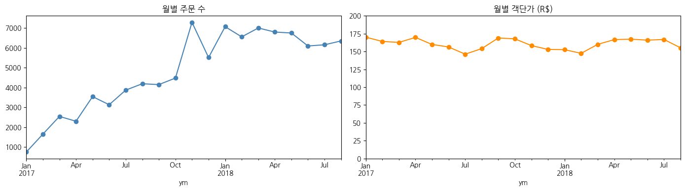
월별 주문 수는 2.40배로 늘었지만 객단가는 +1.4%에 그침 → 다음 성장 레버는 객단가 (묶음 판매 · 추천)
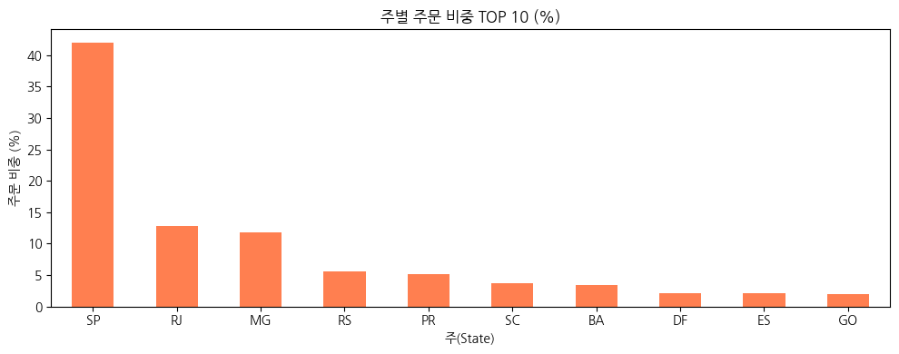
SP · RJ · MG 주문 66.6% → 지역별 마케팅 · 물류 배분
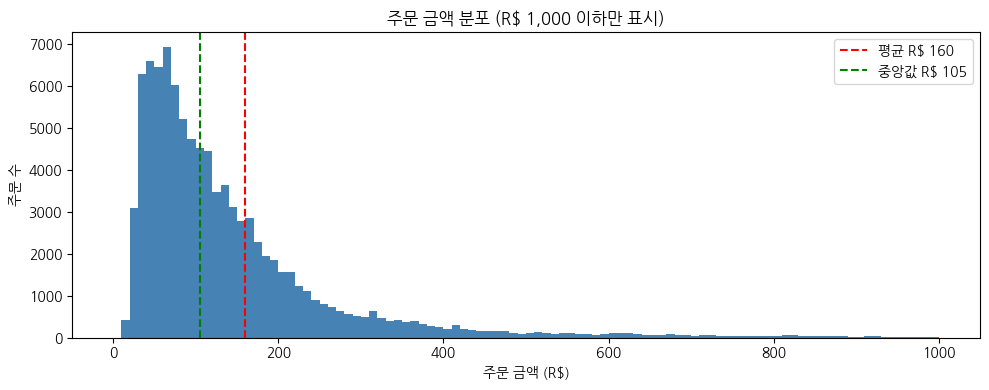
평균 R$160 vs 중앙값 R$105 → 프로모션 기준 금액은 분포로 설정
→ 무이자 할부 프로모션 (KPI 고가 상품 전환율)
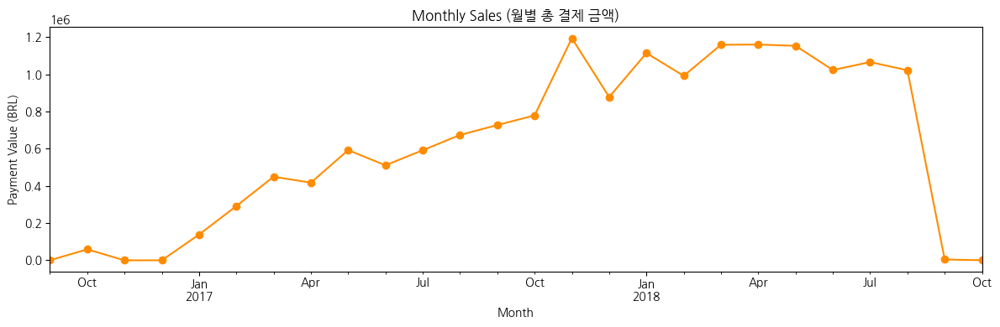
마지막 달 급락은 실제 하락이 아니라 데이터 수집 종료 → 기간을 잘라 분석
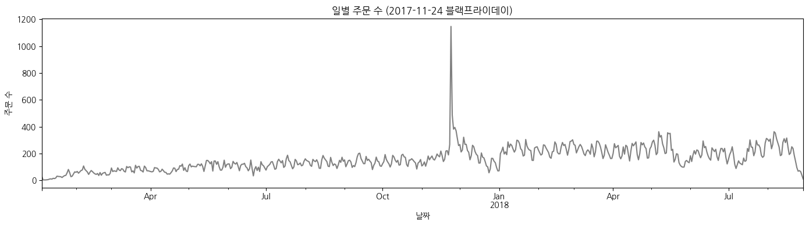
2017-11-24 하루 1,147건 (평소 7.8배) → 같은 기간 · 이벤트를 고려해 비교, 성수기 재고 · 물류 사전 증원
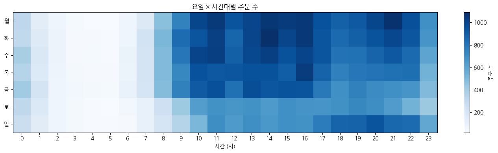
10~16시 45.2%, 0~5시 4.8% (단, 일요일 저녁은 높음) → 알림 · 타임 세일 · 상담 인력 시간대
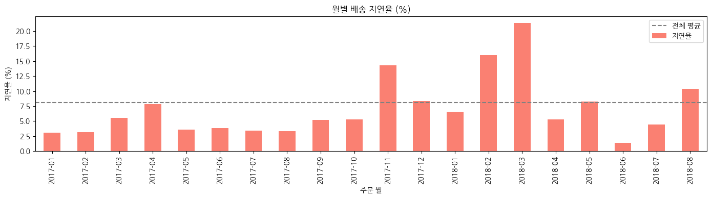
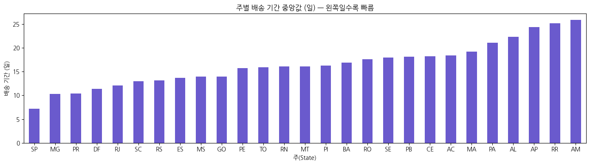
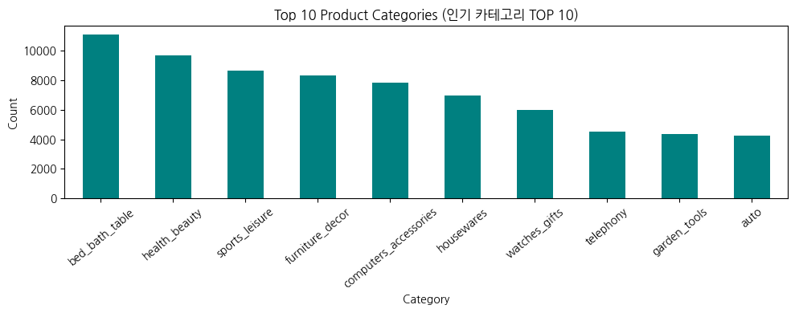
판매 개수 TOP 10 카테고리
watches_gifts 개수 7위 → 매출 2위
상위 17개 카테고리가 매출 80%
→ 핵심 카테고리 집중 관리
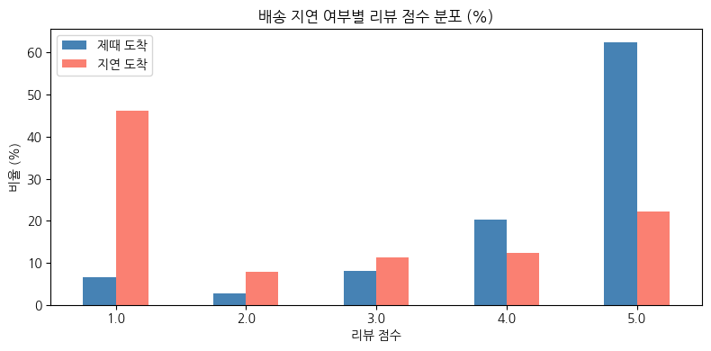
→ 리뷰 글로 불만 분류 (PART 7), 지연이 몰린 판매자 찾기 (PART 8)
카테고리는 ‘종류’를 맞추는 필터,
숫자 특징은 ‘급’을 맞추는 거리(KNN).
같은 카테고리 안에서도 가격은 몇 배, 무게는 열 배 넘게 차이
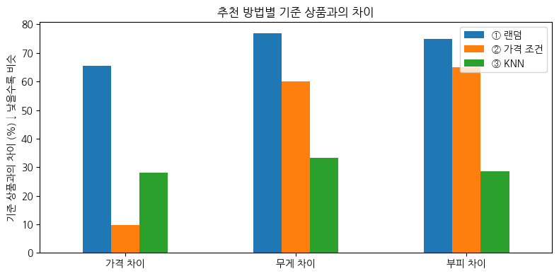
가격 · 무게 · 부피 차이의 평균. 가격만 보면 가격 조건이 1등 → 평가 기준을 여러 개로 잡아야 공정합니다.
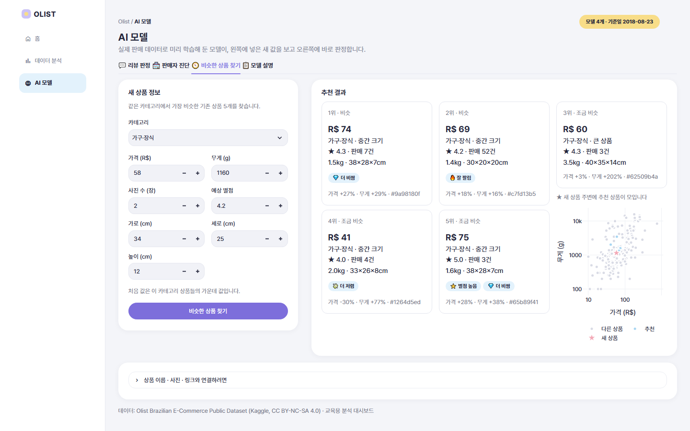
카테고리 · 가격 · 무게 · 크기를 넣으면 가장 비슷한 기존 상품 5개를 카드 + 산점도로 표시
글 없는 리뷰 · 3점 제외. test는 처음에 떼어 두고 끝까지 손대지 않음
class_weight로 부정 클래스 보정| 긍정 단어 | 가중치 | 부정 단어 | 가중치 |
|---|---|---|---|
| antes (기한 전에) | 6.54 | não (아니다) | −10.00 |
| parabéns (칭찬) | 4.94 | péssima (최악) | −4.67 |
| ótimo (훌륭한) | 4.86 | ruim (나쁜) | −3.93 |
| rápida (빠른) | 4.78 | diferente (다른) | −3.85 |
| excelente (탁월한) | 4.70 | aguardando (기다리는 중) | −3.48 |
별점만 보고 학습했는데도 부정 단어에서 배송 지연 · 오배송 · 품질 · 파손 유형이 드러남
부정 F1 : TF-IDF + 로지스틱 0.869 · 딥러닝도 머신러닝과 거의 같음 (리뷰가 짧고 핵심 단어로 판단되는 문제)
| 후보 | 정확도 | 파일 크기 | 판단 |
|---|---|---|---|
| TF-IDF + 로지스틱 | 0.917 | 176KB | ✅ 배포 |
| Embedding (Keras) | 0.924 | 약 2.5MB | 비교용 |
| BERT (pipeline) | 0.730 | 약 540MB | 파인튜닝은 심화 과제 |
옵티마이저를 빼고 저장해 Keras 파일 7.5MB → 2.5MB
| 불만 유형 | 단어 |
|---|---|
| 배송 지연 | aguardando · demora · passou (기다리는 중 · 오래 걸림 · 기한 지남) |
| 오배송 | diferente · comprei · errado (다른 · 샀는데 · 잘못된) |
| 품질 | péssimo · ruim · baixa · inferior (최악 · 나쁜 · 낮은 · 기대 이하) |
| 파손 | quebrado (깨진) |
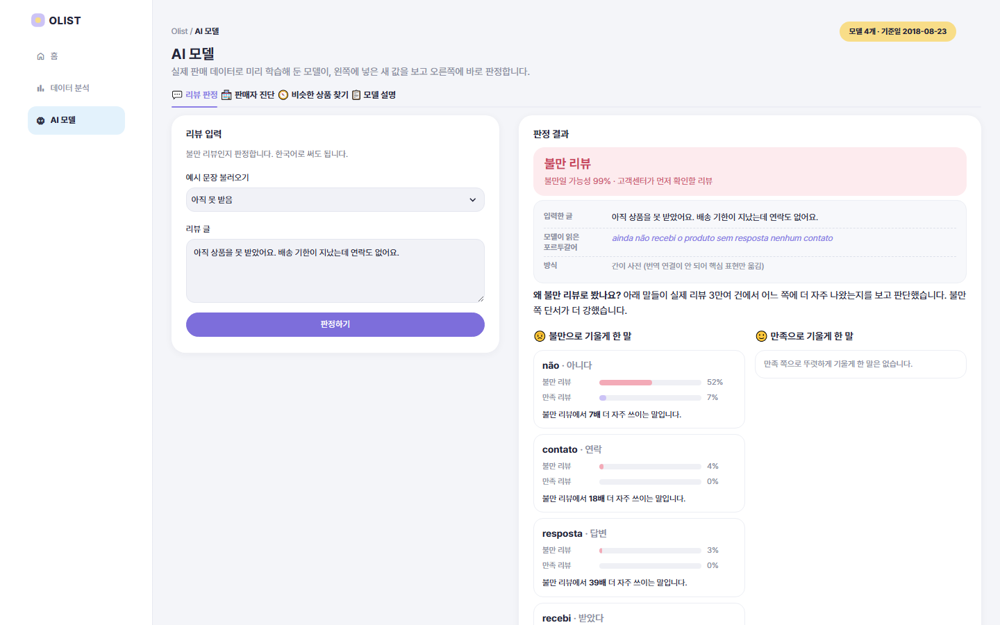
한국어 입력은 포르투갈어로 옮겨 판정하고, 판정 근거 단어가 실제 불만 · 만족 리뷰에 나온 비율을 함께 표시
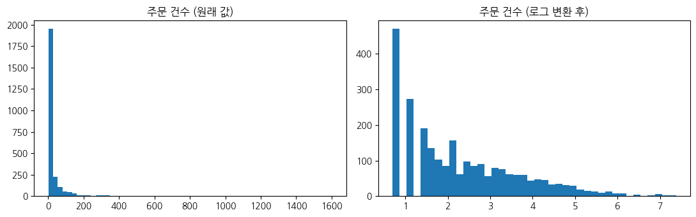
로그 변환을 안 하면 대형 판매자 22명이 군집 하나를 통째로 차지 (군집 크기 1,255 · 670 · 555 · 22)
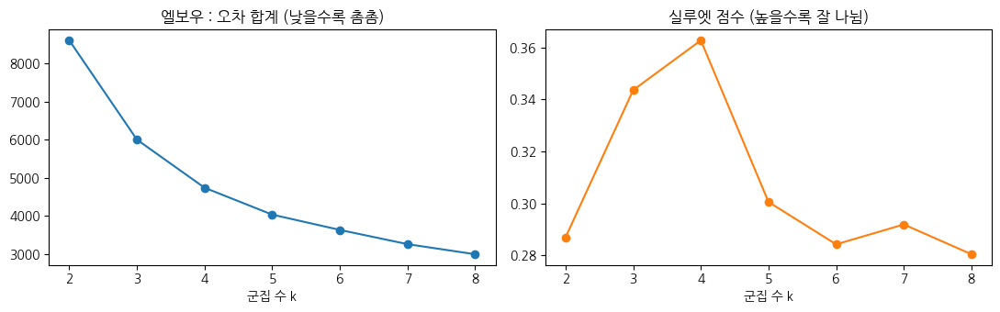
실루엣 점수가 가장 높은 k = 4
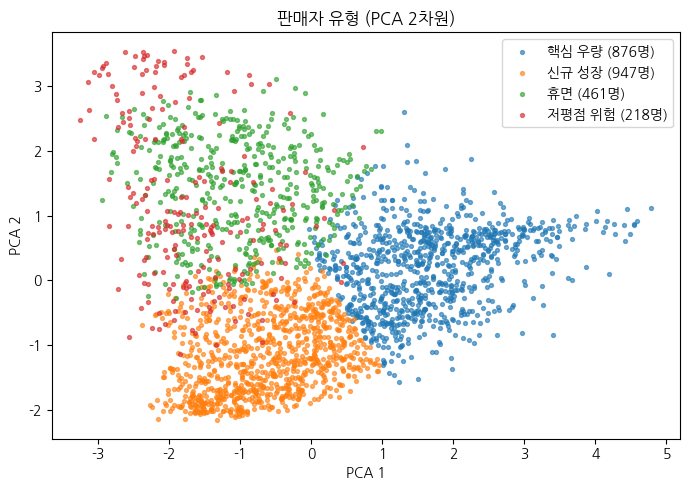
| 유형 | 판매자 | 특징 | 관리 방향 |
|---|---|---|---|
| 핵심 우량 | 876 | 주문이 많고 최근에도 꾸준히 판매 | 우수 판매자 혜택 |
| 신규 성장 | 947 | 시작한 지 얼마 안 됨 | 온보딩 · 첫 리뷰 관리 |
| 휴면 | 461 | 오랫동안 판매 없음 | 재활성 제안 |
| 저평점 위험 | 218 | 평균 배송 약 22일, 출고 지연율 약 33% | 출고 마감 준수 관리 |
💡 저평점 위험 유형은 택배 운송이 아니라 판매자 출고 단계부터 늦음 → 인사이트 9 · 10과 연결
| 유형 | 낮음 | 보통 | 높음 | 매우 높음 |
|---|---|---|---|---|
| 핵심 우량 | 498 | 149 | 106 | 104 |
| 신규 성장 | 244 | 288 | 219 | 173 |
| 휴면 · 저평점 위험 | 0 | 1 | 7 | 28 |
2018-03~05 활동 판매자가 이후 3개월 동안 유효 주문 0건 → 이탈
실제 폐업이 아닌 실습용 정의
핵심 우량 17% ~ 저평점 위험 66%
유형은 해석에 유용하지만, 특징으로 넣어도 성능은 오르지 않음 (새 정보가 없음)
| 모델 | 정밀도 | 재현율 | F1 | AUC | F1 ± |
|---|---|---|---|---|---|
| 규칙 (최근 30일 판매 없음) | 0.49 | 0.58 | 0.53 | 0.77 | 0.04 |
| 로지스틱 회귀 | 0.59 | 0.32 | 0.40 | 0.79 | 0.05 |
| 로지스틱 회귀 + balanced | 0.47 | 0.75 | 0.58 | 0.80 | 0.04 |
| 랜덤 포레스트 | 0.59 | 0.29 | 0.38 | 0.80 | 0.04 |
| 랜덤 포레스트 + balanced | 0.48 | 0.67 | 0.55 | 0.80 | 0.07 |
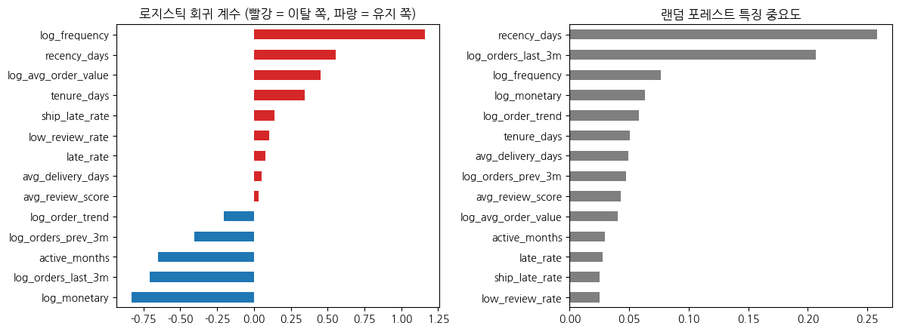
| 모델 | 정밀도 | 재현율 | F1 |
|---|---|---|---|
| 규칙 (30일) | 0.47 | 0.60 | 0.53 |
| 로지스틱 + balanced | 0.43 | 0.75 | 0.55 |
| 랜덤 포레스트 + balanced | 0.44 | 0.71 | 0.55 |
test가 작아 몇 명 차이로 순위가 바뀜 → 교차검증에서 꾸준한 로지스틱 회귀를 배포
| 혼동 행렬 | 예측 유지 | 예측 이탈 |
|---|---|---|
| 실제 유지 (238) | 164 | 74 |
| 실제 이탈 (76) | 19 | 57 |
이탈 76명 중 57명을 미리 찾는 대신 헛경보 74명 → 놓치지 않는 쪽을 선택
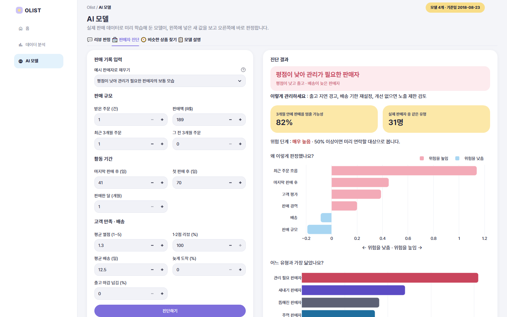
판매 기록 입력 → 유형 · 3개월 내 판매 중단 가능성 · 위험 요인
data/ 작은 파일 5개 (학습과 같은 판매자 특징 함수)st.cache_resource · st.cache_data로 한 번만 로드| orders | 배송 완료 주문 96,203건 (긴 ID → 짧은 번호) |
| items · products_info | 카테고리 · 판매 실적 |
| sellers_latest | 기준일 판매자 특징 (PART 8 · 9 입력) |
| reviews_recent · word_stats | 최근 리뷰 · 판정 근거 단어 통계 |
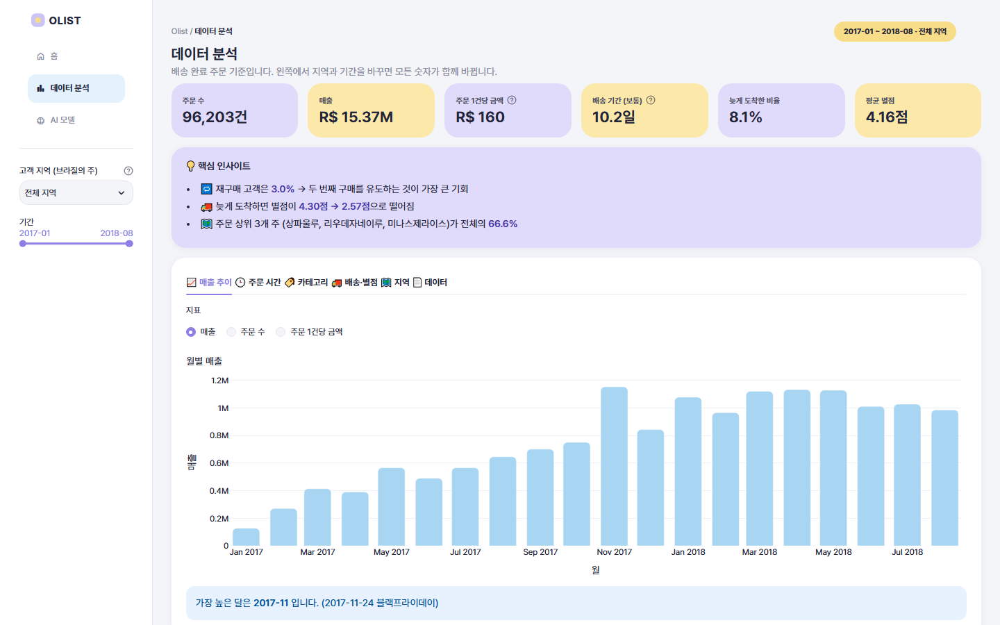
| 페이지 | 보여 주는 것 |
|---|---|
| 홈 | 주문 · 매출 · 활동 판매자 · 평균 별점, 월별 매출, 유형 비율 |
| 데이터 분석 | 지역 · 기간 필터, 핵심 지표 6개, 인사이트, 매출 · 시간 · 카테고리 · 배송 · 지역 · 원본 표 |
| AI 모델 | 리뷰 판정 · 판매자 진단 · 비슷한 상품 찾기 · 모델 설명 |
데모 영상 : docs/demo/olist_dashboard_demo.mp4
| 문제 (PART 5) | 근거 (모델) | 실행 | 측정 지표 (KPI) |
|---|---|---|---|
| 재구매 3%, 성장이 신규 유입에만 의존 (인사이트 1 · 5) | PART 6 유사 상품 추천 | 상품 페이지 · 장바구니에 “비슷한 상품” 노출 → 객단가 · 추가 구매 유도 | 추천 클릭률, 주문당 상품 수, 객단가 |
| 배송 지연 → 리뷰 급락 (인사이트 9) | PART 7-1 감성 분류 | 부정 리뷰 자동 분류 → CS팀 우선 대응, 별점 높은 불만 리뷰도 포착 | 부정 리뷰 응답 시간, 재리뷰 평점 |
| 지연 · 저평점이 일부 판매자에게 몰림 (인사이트 9 · 10) | PART 8 판매자 유형 | 저평점 위험 → 출고 마감 준수 관리 / 신규 성장 → 온보딩 / 핵심 우량 → 우수 판매자 혜택 | 유형별 출고 지연율, 평균 평점 |
| 판매자가 떠나면 상품 구색과 매출이 줄어듦 | PART 9 이탈 확률 | 이탈 확률 × 판매액으로 우선순위 → 담당자 연락, 광고 · 수수료 지원 | 3개월 뒤 실제 이탈률, 유지된 판매액 |
예) “AINDA NÃO RECEBI O PRODUTO” (아직 상품을 못 받았다) — 별점 4점
모델 학습 시점(2018-06-01)이 아니라 데이터의 마지막 시점에 적용해 연락할 판매자 · 확인할 리뷰 목록을 만듦
→ 상품(추천) · 판매자(유형 · 이탈)로 문제를 다시 정의
| 파일 | 구분 | 크기 |
|---|---|---|
| part6_recommend.pkl | 배포 | 159KB |
| part7_1_sentiment_ml.pkl | 배포 | 176KB |
| part7_2_sentiment_model.keras | 비교용 | 2,541KB |
| part8_seller_segment.pkl | 배포 | 3KB |
| part9_seller_churn.pkl | 배포 | 2KB |
배포용 4개 합계 340KB → 작은 서버에서도 서빙 가능
| 한계 | 다음 단계 |
|---|---|
| 추천은 고객 반응을 모름 | A/B 테스트로 클릭률 · 전환율 확인 |
| 이탈 정의는 실습용 | 실제 탈퇴 · 휴면 정책과 맞춰 재정의 |
| 2018-06 시점 학습 | 3개월마다 재학습 · 성능 비교 |
| 감성 모델은 포르투갈어로만 학습 | 새 언어 · 표현 데이터 추가 후 재학습 |
📌 단순한 방법과 먼저 비교하고, 나아질 때 복잡한 방법을 쓴다.
추천 : 랜덤 · 가격 규칙 → KNN / 감성 : 전부 긍정 → ML → 딥러닝 · BERT / 이탈 : 30일 규칙 → 로지스틱 · 랜덤 포레스트